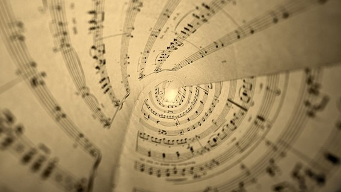
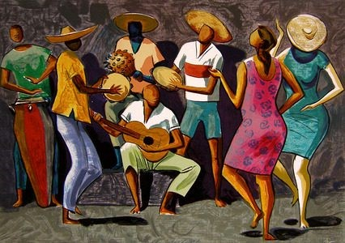
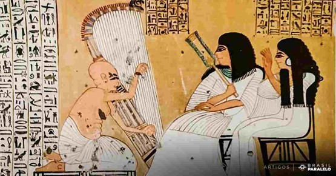
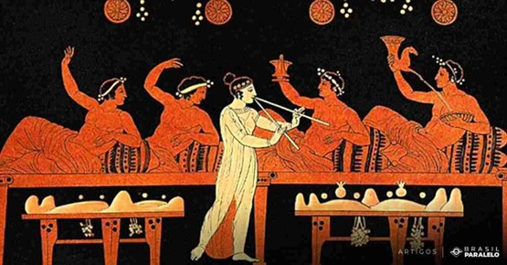

COMO SURGIU A MÚSICA ?
Quem aí não gosta de ouvir uma música? Vem aqui dar uma olhada sobre um pouco da história, origem, como chegou, e muitas outras curiosidades.
UM POUCO SOBRE A ORIGEM DA MÚSICA
A origem da música é mais antiga do que muita gente deve imaginar. Antes mesmo do conceito de música ter sido criado, sons já eram reproduzidos inspirados naqueles emitidos pela própria natureza: pássaros, rios, ventos, folhas e tantos outros.
Não existem relatos científicos suficientes que possam comprovar com exatidão quando a música teve origem, mas é possível afirmar que os homens das cavernas já faziam suas próprias produções musicais. Nesse período eram usados sons criados por movimentos corporais, vocais e alguns poucos instrumentos rústicos. E daí considera-se a início da música pela humanidade.
A ORIGEM DA MÚSICA COMO ARTE
A palavra “música”, em si, tem origem na expressão grega musiké téchne, que significa a arte das musas. Mas, segundo os estudiosos, há 4.000 anos os egípcios já possuíam um nível de expressão musical elevado pois, nessa época, as músicas eram ferramentas para cerimônias religiosas. As harpas já existiam, bem como alguns instrumentos de percussão, flautas e, claro, o canto. Os rituais sagrados, inclusive, já tinham referências que misturavam música e cores, entre outros artifícios visuais. E assim a expressão musical humana foi se formando, se solidificando e se tornando cada vez mais forte. Em 3.000 a.C., na Ásia, as culturas indiana e chinesa desenvolviam suas próprias expressões musicais e a música era encarada como um espelho do universo. Entre os chineses o instrumento mais comum era a cítara, um instrumento de cordas que mais tarde deu origem ao violão e à guitarra. Em termos musicais, era comum a utilização da escala pentatônica, que é composta por cinco notas. Uma bela referência para os guitarristas e blueseiros de plantão! Em um próximo passo evolutivo foram os gregos que começaram a aperfeiçoar a música. Eles tiveram muito peso no desenvolvimento musical de alguns gêneros que são ouvidos até hoje como a ópera, a música instrumental e a música erudita. A música estava presente em cantos, danças, peças de tragédia e também nos cultos gregos.
HITÓRIA DA MÚSICA BRASILEIRA
A história da música brasileira se inicia com os indígenas e os jesuítas. O encontro entre esses dois povos constituiu no começo da música popular brasileira.
A evolução desses ritmos, como o cateretê ou o cantochão, evidencia-se ainda hoje, pois são tocados em festas populares.
A música popular brasileira cresceu significativamente apenas no final do século XVII e durante o século XVII, com o aparecimento dos primeiros centros urbanos.
A chegada da Família Real ao Brasil, em 1808, transformou a produção musical e mudou os parâmetros estéticos brasileiros.
A Coroa Portuguesa se estabeleceu no Rio de Janeiro e essa cidade recebeu a biblioteca musical da família Bragança – uma das melhores bibliotecas da Europa na época.
Os conjuntos que executam esse gênero de música são chamados de regionais. Os músicos, compositores ou instrumentalistas são denominados de chorões.
COMO ERA O ASPECTO DE MÚSICA?
A humanidade possui uma relação longa com a música, sendo essa umas das formas de manifestação cultural mais antigas.
Ainda na pré-história, há mais de 50 mil anos, os seres humanos começaram a desenvolver ações sonoras baseadas na observação dos fenômenos da natureza.
Os ruídos das ondas quebrando na praia, os trovões, a comunicação entre os animais, o barulho do vento balançando as árvores, as batidas do coração; tudo isso influenciou as pessoas a também explorarem os sons que seus próprios corpos produziam. Como, por exemplo, os sons das palmas, dos pés batendo no chão, da própria voz, entre outros.
Nessa época, tais experimentações não eram consideradas arte propriamente e estavam relacionadas à comunicação, aos ritos sagrados e à dança.
DE ONDE VEIO A MÚSICA?
Não é fácil identificar quando a música começou, quem foi o primeiro a cantar, ou o primeiro instrumento criado. A melhor suposição é dizer que a música existe como uma linguagem desde que o próprio homem surgiu.
Para entender melhor a origem da música, ao longo deste artigo serão apresentados resumos curtos da evolução da música através do tempo e de várias culturas.
MÚSICA NA PRÉ-HISTÓRIA
Os primeiros homens ouviam o som das ondas, o canto dos pássaros, os sons que outros animais faziam para se comunicar, os trovões, os uivos do vento e os próprios batimentos do coração.
Perceberam também que podiam produzir sons, por exemplo, batendo as palmas das mãos, os pés no chão e com sua própria voz.
Há registros de uma flauta feita de osso datada de 60.000 a.C. Apesar deste dado arqueológico, as informações se tornam mais substanciais na Antiguidade.
A MÚSICA NO EGITO
As referências iconográficas comprovam que no Antigo Egito, por volta de 3.000 a.C., havia instrumentos variados como o tambor, a harpa, a cítara e a flauta.
A música era um importante elemento religioso. Os antigos egípcios acreditavam que o deus Thoth era o criador da música, e que Osíris a tinha usado para civilizar o mundo. Na vida das comunidades, a música estava relacionada à comunicação, aos ritos sagrados e à dança.
A MÚSICA NA MESOPOTÂNIA
A região da Mesopotâmia estava localizada entre os rios Tigre e Eufrates. Ali viveram sumérios, assírios e babilônios. Nessa região foram encontradas liras e harpas em 3.000 a.C. Harpas sumérias que tinham entre 3 e 20 cordas foram descobertas em escavações. Alguns objetos encontrados tinham mais de 5 mil anos. Além das harpas, arqueólogos também encontraram cítaras que pertenciam aos assírios. E o mais impressionante foi o registro na mais antiga linguagem escrita do mundo: a escrita cuneiforme. Nele havia registros de músicos, geralmente dentro dos palácios ao lado dos monarcas.
A MÚSICA NA CHINA E NA ÍNDIA
A música prosperou na Ásia, especialmente na Índia e na China, muito fortemente relacionada à espiritualidade. Entre os chineses, o instrumento mais popular foi a cítara em um sistema musical que possuía uma escala de cinco tons, chamada pentatônica.
Na índia, em 800 a.C., utilizavam-se as ragas, compostas de tons e semitons e não de notas. É interessante notar que nas grandes civilizações exemplificadas acima, a música desempenhou um papel transcendental, unindo o homem ao sagrado, a algo superior. Com os gregos não foi diferente, mas eles têm uma contribuição adicional na história da música, especialmente na cultura ocidental.
A MÚSICA NA GRÉCIA ANTIGA
O berço da cultura ocidental foi a Grécia, e com a música não foi diferente. A forma como a música é entendida hoje deve-se aos gregos, que já a consideravam uma forma de elevar o homem transcendentalmente e moralmente. Apolo, por exemplo, era a divindade que regia as artes. Em muitas representações é possível vê-lo segurando uma lira, um dos mais antigos instrumentos de corda.
O que é música modal?
A música modal, desenvolvida pelos gregos, era uma organização sonora composta de 7 sons. A música modal não se preocupava com cada nota em si, cada som em si. As notas musicais não tinham nem mesmo nomes nesse período da história da música. Isto surgiu apenas na Idade Média, como será explicado mais adiante. Buscando entender o intervalo sonoro entre um som e outro, os gregos criaram a noção de que, como havia 7 sons, havia 7 formas diferentes de iniciar uma música. Também desenvolveram o entendimento de mudança de uma nota para outra em meio tom (½ tom) ou em um tom. Dependendo de qual nota escolhiam para iniciar o intervalo do som para o som subsequente, fazia-se uma divisão sonora chamada música modal.
Os modos gregos foram chamados:
- Dórico
- Jônico
- Frígio
- Lídio
- Mixolídio
- Eólio
- Lócrio
Eles valorizaram imensamente a música e, portanto, estudaram as formas de entender os sons e como iniciá-los. Até a Renascença, a música produzida era preponderantemente modal e mais instrumental do que vocal. Entretanto, antes que a história da música seja explicada no período do Renascimento, é necessário entender as contribuições acrescentadas pelo Cristianismo.
Música, Renascimento e humanismo
Foi no período do humanismo que surgiu Giovanni Pierluigi da Palestrina, a maior representação da música ocidental. Depois surgiu, por exemplo, Claudio Monteverdi, grande compositor italiano. A Igreja, com sede em Roma, havia se tornado um grande investidor da cultura no período renascentista, que assistiu ao florescimento de gênios. Entre os séculos XIV e XVI, a cultura passou por transformações que impactaram a história da música.
O período do Renascimento também foi marcado pelas Grandes Navegações. Nesta época, os portugueses atravessaram o oceano e descobriram o Brasil. Saiba como tudo começou com a Reconquista da Península Ibérica nas lutas entre cristãos e muçulmanos.
A cultura foi enriquecida e se tornou presente na vida das pessoas. Surgiram os mecenas, cidades que viviam em torno das obras de arte e os luthiers, profissionais especializados na construção e reparo de instrumentos de corda. No período do humanismo, o ser humano se mostrou espetacular, o pilar do conhecimento. O homem ocupou o centro das atenções como um ser racional e maravilhoso, capaz de grandes coisas. Os gênios e artistas deste período viram que Roma era um museu ao ar livre. Ali, houve a experiência do encantamento e da catarse grega. Inevitavelmente, com o reconhecimento do valor, movimentos menos interessantes também surgiram dentro do próprio homem. Inveja, insegurança, imaturidade, superioridade. A cultura que existia até então era teocêntrica e se tornou antropocêntrica. Esta postura deslocou o foco de Deus para o próprio homem.
Uma curiosidade envolvendo esta centralidade no homem pode ser demonstrada em Franz Liszt, príncipe do piano.
Nos concertos, ele chegava com luvas brancas e as jogava no palco para que as mulheres as disputassem, porque o consideravam muito sedutor.
Um belo dia, chegou ao palco para um concerto com outros artistas e disse: “O espetáculo sou eu.”
Como se não fosse o suficiente, foi sua a ideia de mudar a posição do piano, para ser visto em perfil pela plateia, algo que permanece até os dias de hoje. Na história da música e das outras artes, a expansão cultural foi indiscutível. A música, que até então era modal, ganhou um aspecto mais vocal e instrumental e começou a ser levemente analisada. Nesta análise, houve uma mudança de paradigmas. A música foi analisada do ponto de vista de cada nota em si e não do intervalo entre as notas.
A música clássica
O que é música clássica?
A música clássica é aquela que permanece, pois o clássico é permanente. Em um casamento, o bolo da noiva é clássico; e no cinema, o filme que não se esquece é clássico. Beethoven é clássico porque não é esquecido. O que ele fez na história da música, como outros compositores, foi grandioso demais para ser esquecido ou desconsiderado. Existem músicas e músicos que fazem sucesso comercialmente, mas que não têm nada de clássico e não têm permanência. Logo, ninguém mais se lembra deles. Neste sentido, a música clássica também pode ser chamada de música erudita, que vem do latim ex-rude. Ela tira a rudeza do homem, seu lado bruto. É uma música que refina e enriquece. O Classicismo resgatou a linha melódica da música, precisamente o que permanece na memória. Nesta época, a música instrumental e as orquestras ganharam ainda mais destaque. O piano tomou o lugar do cravo e foram criadas notas estruturas musicais, como a sonata, a sinfonia, o concerto e o quarteto de cordas. Sonata vem de sonare (soar). É uma obra em diversos movimentos para um ou dois instrumentos. Sinfonia significa soar em conjunto, uma espécie de sonata para orquestra. A sinfonia clássica é dividida em movimentos. Os músicos que aperfeiçoaram e enriqueceram a sinfonia clássica foram Haydn e Mozart. Concerto é outra forma de composição surgida no período clássico. Apresenta uma espécie de luta entre o solo instrumental e a orquestra.
A música nos séculos XX e XXI
O rádio possibilitou uma grande transformação na música. Com isso, surgiram novas tecnologias e suportes para as gravações e para a difusão musical. Os artistas começaram a se popularizar rapidamente, o que também deu impulso à indústria musical. A televisão permitiu clipes, e as apresentações performáticas foram difundidas. Nos últimos dois séculos o ritmo tomou o lugar de primazia da melodia e da harmonia, e a música começou a mover mais o corpo através da sensualidade do que com a alma através da inteligência. Apesar da popularização que os meios tecnológicos trouxeram, o que é bom, o lado negativo foi a expansão da indústria cultural. Esta última ocupa-se mais com a venda do que com a arte em si.